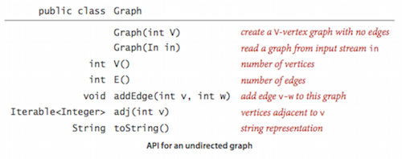
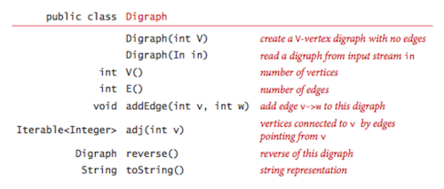

Graph
Home
Undirected Graphs and Directed Graphs
Undirected Graphs:
- Can be represented by adjacency-matrix, adjacency-lists or edge array.
- Depth first search is a normal used recusive method.

Directed Graphs:
- Use depth first search to check the reachability.
- Strong connectivity is an equivalence on the set of vertices.
